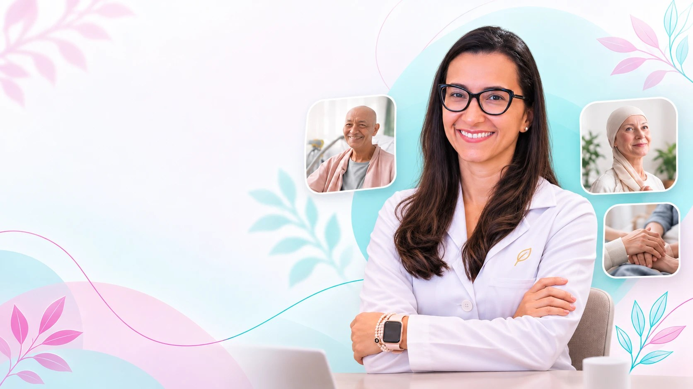

01
Perda de peso e fraqueza
A roupa fica larga, a força diminui e até as atividades mais simples começam a exigir esforço.

Para quem está em tratamento oncológico, em diferentes fases do cuidado
Monto estratégias alimentares personalizadas para cada fase da sua jornada, planejadas para potencializar o protocolo do seu tratamento, com base nas melhores práticas da nutrição oncológica. Com meu acompanhamento contínuo, seguimos juntos, tirando suas dúvidas, acompanhando sua evolução e atenuando os efeitos colaterais do tratamento.
Você fala direto com a minha equipe pelo WhatsApp.
Quase todo paciente em tratamento passa por pelo menos um desses pontos. E cada um deles pede uma estratégia alimentar própria.
A roupa fica larga, a força diminui e até as atividades mais simples começam a exigir esforço.
Açúcar pode? E leite? São tantas orientações diferentes que fica difícil saber o que realmente é seguro.
A fome desaparece, as refeições ficam difíceis e você se preocupa por não conseguir comer o suficiente.
Só de sentir o cheiro da comida, o estômago já vira. Comer se torna um desafio.
O que posso comer? Como lidar com gases, alterações na bolsa e o receio de passar mal após as refeições?
O corpo mudou, a alimentação já não é a mesma e surgem dúvidas sobre como se nutrir durante a recuperação.
O paladar muda e até os alimentos de que você mais gostava deixam de ser agradáveis.
A dor e o desconforto dificultam a alimentação, justamente quando seu corpo precisa de cuidados.
A perda de peso e de músculo durante o tratamento não é só estética. Os estudos em nutrição oncológica mostram que ela está ligada a:
Com estratégias feitas para o seu momento, a alimentação deixa de ser mais um problema e passa a ser uma aliada do seu tratamento.
Quanto antes você começa, mais o seu corpo tem chance de chegar forte nas próximas sessões.
Quero agendar minha consultaSou nutricionista especializada em oncologia e há mais de 20 anos dedico minha carreira exclusivamente ao cuidado de pessoas com câncer.
Ao longo dessa trajetória, já acompanhei mais de 30 mil pacientes oncológicos, unindo a experiência clínica em serviços de referência ao conhecimento científico para oferecer um cuidado individualizado.
Minha atuação também vai além do consultório. Sou sócia-fundadora e Diretora Científica da Academia Brasileira de Nutrição Oncológica (ABNO), professora de pós-graduação e compartilho minha experiência em congressos médicos e eventos científicos de oncologia.
Mas, depois de tantos anos, uma das minhas maiores certezas é que nenhum paciente é igual ao outro. Por isso, meu trabalho começa pela escuta e por compreender sua história, seu tratamento e suas necessidades, para construir uma estratégia nutricional realmente pensada para você.
Um cuidado próximo, contínuo e personalizado, para que você tenha uma especialista ao seu lado antes, durante e após o tratamento, com mais segurança, confiança e tranquilidade ao longo da jornada.
Em uma consulta online de aproximadamente uma hora, avalio seu histórico, tratamento, exames, medicamentos, sintomas e rotina alimentar para compreender suas necessidades e definir as melhores estratégias nutricionais.
Você recebe um plano pensado para o seu tratamento, seus sintomas, sua rotina e suas preferências. O objetivo é tornar a alimentação mais fácil e prazerosa, ajudando seu corpo a receber os nutrientes de que precisa.
Plano e orientações entregues em até 48 horas após a consulta.
O cuidado não termina com a entrega do plano. Durante o acompanhamento, esclareço suas dúvidas e adapto as orientações conforme a evolução do tratamento e suas necessidades.
Seguindo seu plano alimentar consegui passar por 16 sessões de quimioterapia de uma forma bem leve, você é maravilhosa! Graças a Deus! Gratidão eterna!
Dra. Tatiane, queria agradecer pelo atendimento de hoje. Gostei muito da nossa conversa e de toda a atenção que você teve comigo. Me senti muito bem acolhido e seguro com as orientações.
Tati, você foi fundamental no meu processo do câncer de mama. Obrigada por todo o cuidado. Você é uma profissional diferenciada.
Super indico essa profissional maravilhosa. Seu suporte foi de suma importância para que minha mãe passasse pelo tratamento, poucos foram os sintomas. Minha mãe fez o tratamento sem atraso. Te agradeço muito, Tati.
Um presente na hora certa. Ela me fez enxergar a alimentação de outro jeito, com uma doçura e um cuidado que eu nunca tinha recebido.
Conheci ela aqui pelo insta e hoje sou acompanhada por ela nessa minha jornada contra o câncer. Além do plano alimentar ela é muito atenciosa, sempre querendo saber como eu estou, principalmente na época em que estou em quimioterapia. Amando meu acompanhamento.
Em um momento de vulnerabilidade, nada faz mais diferença do que ser acolhida com o carinho e o profissionalismo da Dra. Tatiane.
Você é um ser humano muito gentil, dedicada e competente. Sou grata por ter escolhido você para cuidar da minha filha neste momento tão difícil e delicado.
Me senti acolhida em cada momento da consulta online, tive respaldo, tirou todas as dúvidas, foi amorosa e paciente. O fardo é tão pesado, mas Deus coloca pessoas em nosso caminho para nos ajudar. Me sinto amparada. Obrigada, Tati.
Fiz a escolha certa. Estou me sentindo cuidada. Uma alimentação fácil de seguir. Gratidão!
Relatos publicados espontaneamente pelas pacientes. Cada organismo responde de um jeito ao tratamento.
A consulta dura em média 1 hora. É um momento completo, em que eu analiso o seu caso com calma e atenção.
É 100% online, por chamada de vídeo. Funciona para qualquer lugar do Brasil.
Se você tiver exames recentes, é bom levar. Se não tiver, eu te oriento sobre o que pedir e faço o atendimento com o que estiver disponível.
Em até 48 horas depois da consulta.
Nutrição oncológica é uma especialidade. O que funciona para uma pessoa saudável muitas vezes não funciona, e pode até atrapalhar, durante o tratamento do câncer.
É o contrário. Quanto antes a alimentação é ajustada, mais força o corpo tem para atravessar as próximas sessões. Esperar costuma custar peso e músculo.
Não. A nutrição oncológica trabalha junto com o tratamento médico, nunca no lugar dele. O papel da alimentação é fortalecer o corpo, aliviar sintomas e melhorar a qualidade de vida durante o processo.
Sim, quando necessário. Eu avalio a suplementação caso a caso, com base nos seus exames, sintomas e tratamento.
Sim. Muitas famílias entram em contato buscando ajuda para quem está em tratamento. Eu atendo tanto pacientes quanto cuidadores.
O atendimento é particular. Para saber valores e condições, é só chamar no WhatsApp.
São mais de 20 anos dedicados à oncologia e mais de 30 mil pacientes atendidos. Quero te ajudar a passar por essa fase com estratégias feitas para o seu momento.
Quero agendar minha consultaAtendimento online para todo o Brasil.